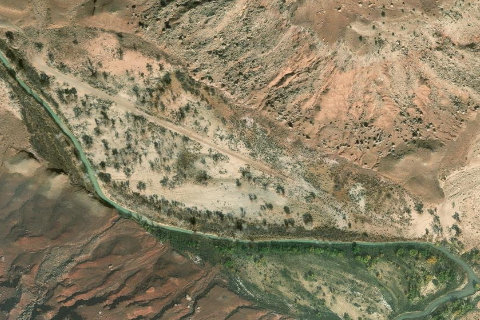

Mexican Mountain
MEXICANMOUNTAIN · UT

Aerial imagery source: Esri, Vantor, Earthstar Geographics, and the GIS User Community
| Identifier | MEXICANMOUNTAIN |
|---|---|
| State | UT |
| Runway length | 1,900 ft |
| Runway width | 40 ft |
| Surface | Dirt |
| Runway | 11/29 |
| Elevation | 4,461 ft |
| Ownership | blm wsa |
| CTAF | 122.9 |
| Coordinates | 39.0188, -110.4504 |
Notes
[ubcp] Description : Mexican Mountain's runway is oriented west/east alongside the San Rafael River inside the Mexican Mountain Wilderness Study Area. Due to the sensitive nature of the location, pilots are requested to adhere to the UBCP's Code of Conduct to help us maintain our strong working agreements with the BLM. Reminder to all pilots this airstrip exists within a Wilderness Area. Motorized or wheeled conveyances are not to be used on the airstrip or surrounding areas. Please read wilderness Leave no Trace practices for Mexican Mountain . The use of WAG bags is encouraged. Runway : 1900 ft long x 40 ft wide dirt runway in great condition. Slopes uphill slightly to the west. First 500' from the east is more soft than the rest of the runway and has a "dark spot" that appears wet throughout the year. Approach Considerations : Tall trees (30+ ft) on both sides of the runway present a hazard when landing to the east (downhill). Typically land to the west and depart to the east. Tall trees alongside the runway as well, mostly down the western half. Amenities : Campgrounds and fire rings (please use already established camping/parking areas and fire rings). Windsock: Yes, located east of the runway.